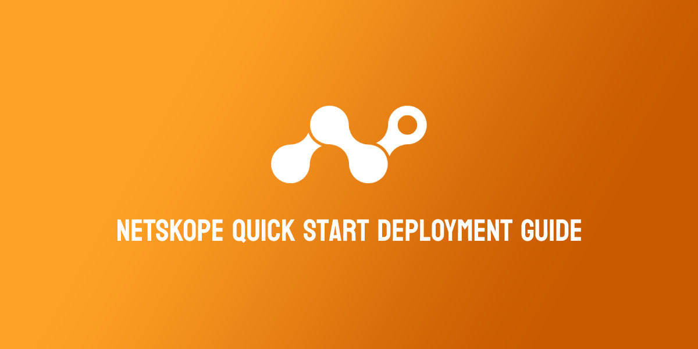

33 minutes
Netskope Quick Start Guide

Disclaimer: Any thoughts or opinions in this article are my own and do not reflect those of Netskope. I am a Netskope SE who worte this guide in his own time to assist Netskope customers. Please lodge a PR on GitHub to correct any mistakes or inaccuracies.
The Quick Quick Start
There are 2 fundamental steps required to deploy Netskope in your environment:
1. Add users to the platform.
This is typically done by integrating with your Identity Service (ie: Azure AD, Okta) using SCIM (API), or synchronizing your on-premise Active Directory using the Directory Importer Tool.
Having users and identity attributes in the Netskope platform is critical for 2 reasons:
- Traffic is tied back to user identity; allowing you to have visibility on who is accessing what within your organization.
- Policies are primarily centred around user identity attributes; eg: Block WeTransfer EXCEPT for those in the Marketing team.
2. Deploy the Netskope Client to devices
There are numerous methods to steer traffic to the Netskope cloud for enforcement, but the primary one among them is the Netskope Client. This is a piece of software deployed to a user’s device that will:
- Automatically connect to the closest Netskope POP and forward all internet-bound traffic for inspection and enforcement.
- Attribute traffic entering and leaving the device with the identity of the user (user@company.com).
The Netskope client is incredibly lightweight as all inspection happens within the Netskope cloud: There is no traffic processing that occurs on the user machine.
The default configuration of the Netskope client is to steer web traffic to Netskope for inspection, so there is no baseline configuration needed to get the client to function out of the box.
Using this Guide
The full guide below covers everything that a typical enterprise will need to do to get Netskope up and running effectively in their environment; including accessing the Admin Console, ensuring that your firewalls allow the Netskope client to connect, ensuring that you have the traffic steering bypasses you need in place, and customizing the configuration of the client.
Step 1 - Access the Admin Console
The Netskope Administrator Console provides a central interface for configuring the settings of every aspect and feature the Netskope Cloud Security Platform has to offer; including creating policies, reviewing reports, and managing incidents.

The Netskope Administrator Console - Dashboard
The login URL to the admin console is unique for your company and different for every Netskope tenant. It will be of the form:
- https://<tenant-name>.goskope.com
- https://<tenant-name>.au.goskope.com
- https://<tenant-name>.eu.goskope.com
For example:
You will receive your login URL along with administrator credentials from your Netskope account representative upon creation of your account. If you have not received these, please contact support or your Netskope account team.
See more:
Step 2 - Create Administrators
Within the Admin Console, navigate to Settings (bottom-left) > Administration > Admins, and click the New Admin button.

The Administrator management page
Enter the email address of the administrator you would like to add, and select an appropriate role. For full read-write access, select the Tenant Admin role. For read-only access, select the Restricted Admin role.

Adding a new administrator
For more information on administrator roles, including custom roles, see the links below.
Longer-term, it is recommended that you integrate admin authentication with your company’s SSO provider (eg: Azure AD, Okta, etc). This can be managed via Settings > Administration > SSO.
IP Whitelisting can also be applied to the Netskope Admin Portal to restrict the permitted source IP addresses that are allowed to connect to your Admin Console. This can be managed via Settings > Administration > IP Allowlist.
Step 3 - Integrate an Identity Provider (IdP)
Integrating with an IdP (eg: Azure AD, Okta) is a crucial part in configuring your Netskope tenant for use. Users and Groups that are within your IdP’s directory will be synchronized to Netskope for use in security policies and access controls.
For example: Block SSH as a protocol for every user except those in the IT, CloudOps, and SecOps teams.
This allows your IdP to become the single-source-of-truth from a security perspective once you have all of your policies defined within the Netskope portal.
For example: When you on-board a new employee, you will add them to the company directory and appropriate AD/Security Groups. This information is immediately synchronized to Netskope where your security policies (based on identity attributes) are instantly enforced for that user.
There are two methods available for synchronizing your users and groups:
-
SCIM Provisioning (recommended)
This API link between your IdP and Netskope that automatically synchronises user and group information. -
Directory Importer Tool
Directory Importer is a tool, run locally, that synchronises your directory information from your on-premise Active Directory Domain Controller to Netskope. This is only recommended if you don’t have a cloud-based identity service like Azure AD or Okta.
If you don’t have a user directory or identity provider, users and groups can also be manually created within the Netskope Admin Portal.
SCIM User Provisioning
It is Netskope best practice to use the SCIM protocol (an API link between the IdP and Netskope) to synchronize users to your Netskope tenant.
System for Cross-domain Identity Management (SCIM) is a standard for automating the exchange of user identity information between identity domains, or IT systems. - Wikipedia
SCIM is supported by all major cloud IdPs, including Azure Active Directory (Azure AD), and Okta. Click the link below corresponding to your IdP for a guide on how to integrate it with Netskope:
Once completed, you can verify if your users are being synchronized to Netskope correctly by navigating to Settings > Security Cloud Platform, and clicking Users under the Netskope Client section.
Confirm that the users have been successfully synchronized and imported into Netskope.
You can validate that group membership has also successfully synchronized by clicking on the username of a user to see which groups they belong to.

Validate that the group membership has also been correctly synchronized for a user by clicking on their username.
Directory Importer
If your organization does not use a cloud IdP, you can use Netskope’s Directory Importer tool to synchronize users from your on-premise Active Directory servers, or JumpCloud.
Manual Import
If you operate a smaller organization that does not have a cloud IdP or operate Active Directory server, Netskope also supports manual user creation via the Admin Console UI or CSV Import.
Step 4 - Check Firewall Policy
We will shortly be installing the Netskope Client (which is used to automatically forward traffic to the Netskope cloud) to user devices, and you must ensure that it is able to communicate to the Netskope Cloud.
Ensure that the following are permitted through both any installed Endpoint firewall software (eg: Windows Firewall, Crowdstrike, etc) and any on-premise network firewall (Palo Alto, Fortinet, etc):
- TCP 443 towards the Netskope IP range:
163.116.128.0/17 - TCP 53 & UDP 53 (DNS) towards
dns.google(8.8.8.8and8.8.4.4).
Google DNS is used for geo-location purposes to determine the closest Netskope datacenter to connect the user to.
You should ensure that the Netskope IP range is bypassed from any SSL decryption/inspection mechanisms you are running on perimeter security appliances or internal proxy servers.
All connections between the Netskope Client and Netskope cloud are Certificate Pinned to prevent Man-in-the-Middle attacks; hence attempting to inspect this connection will cause it to fail.
Step 5 - Bypass Netskope from your VPN
You only need to follow this step if you operate a VPN in Full Tunnel mode
i.e: All traffic (internal and internet-bound) is captured by the VPN and sent back to the corporate network.
Netskope strongly recommends changing your VPN configuration to run in split tunnel mode when operating alongside the Netskope Client.
In split tunnel mode, the VPN is only used for internal traffic (i.e. RFC1918 ranges) and explicit routes, while all internet-bound traffic bypasses the VPN and is captured by Netskope.
You must include a bypass/exclude the Netskope IP range 163.116.128.0/17 from the VPN tunnel so that the Netskope Client can connect to the Netskope Cloud and the closest Netskope datacenter directly.
Failure to bypass the Netskope IP range means that the Netskope Client will establish connectivity to the Netskope Cloud via the VPN tunnel and your corporate internet egress point.
This will introduce additional hops and latency to the transaction, and will prevent users from connecting to any Netskope data center except for the one closest to your internet egress point.
Step 6 - Configure a Steering Profile
A Steering Profile tells the Netskope Client what traffic it needs to capture and send towards Netskope, and what traffic it needs to bypass and let through directly.
Steering Profiles can be global (applied for all users) or targeted to specific user groups. The latter can be useful for testing, or for use with specific groups of users that may require more granular configuration (eg: developers).
Every Netskope tenant has a default steering configuration that is used as a fallback should no other Steering Profiles be present or matched on. You can simply continue to use the default steering profile if you wish (with a few small tweaks), or create your own from scratch.
To start, navigate to Settings > Security Cloud Platform > Steering Configuration.
On the Steering Configuration page, change the Bypassed Traffic setting to Log. This ensures that you retain visibility on traffic that is not send to Netskope for inspection.
The Steering Configuration page is where you manage what traffic should be sent to Netskope for inspection.
Create or Edit a Steering Profile
Using the Existing Default Configuration
If you simply wish to leverage the existing default steering profile, click the Default tenant config profile to edit it’s configuration, and select the Edit button at the top-right.
To edit the settings of the default steering configuration, select the profile and click Edit at the top-right.
Creating a New Steering Configuration
You may want to create a separate profile and target your IT team (or the team will be managing the Netskope platform) as a way of testing traffic steering changes in isolation before pushing them to the rest of your organization.
To create a new profile, click New Configuration, and if prompted, select User Group. Configure the new steering profile by giving it a name (eg: Testing), and assigning a user group.
The User Group field is a list of Active Directory/Security Groups that have been synchronized from the identity provider.
Configure the Steering Profile

The configuration window for the steering configuration.
Select the type of traffic to be sent to Netskope
In the configuration window, select the option for the type of traffic that you would like the Netskope Client to capture and and send to the Netskope Cloud.
Depending on your subscription, some options may not be visible to you:
-
Cloud Apps Only - Steer only selected applications to Netskope for deep analysis. You can make exceptions and allow special accommodations for custom applications. If you are a Cloud Inline or CASB-only customer, you should select this option.
-
Web Traffic - Steer all web traffic (HTTP and HTTPS) to Netskope for deep analysis. You can make exceptions for traffic that have personal or private content. Most organizations should select this option.
-
All Traffic - Steer all traffic (web and non-web) to Netskope for deep analysis. You can make exceptions for traffic that have personal or private content. If you are subscribed to Cloud Firewall, you should select this option.
If you are subscribed to Netskope Private Access (NPA), ensure that the Steer Private Apps checkbox is also selected.
Click Save when you are done.
You can click the Non-Standard Ports tab to specify ports other than 80 and 443 to be forwarded to the Netskope proxy
The Dynamic Steering setting can be used to change the way traffic is forwarded by the Netskope Client based on whether the user is working from within the company network, or remotely.
See more:
(Cloud Apps Only) Set the applications to be sent to Netskope
If you selected the Cloud-Apps Only option above, then you now need to specify which cloud applications (eg: Dropbox, Teams, Sharepoint, etc) that the Netskope Client should intercept and send to Netskope.
Click Add Steered Item, and specify the applications required.
Bypassing Traffic
Traffic can also be explicitly bypassed from being sent to Netskope entirely. This is managed under the Exceptions tab of the steering profile.
RFC1918 traffic (10.0.0.0/8, 172.16.0.0/12, 192.168.0.0/16) is always bypassed from Netskope by default, and Netskope also maintains a list of applications that typically need to be bypassed (due to certificate pinning), eg: Crowdstrike.
Adding bypasses is covered in more detail in the next section.
Enable the Steering Profile
If you created a new steering profile, you will need to enable it before it can be used. On the Steering Configuration page (Settings > Security Cloud Platform > Steering Configuration), click the “…” menu next to the steering profile you wish to enable, and select Enable.
Note: The default steering config profile is always enabled.

You must enable a new steering profile before it will be actively used by the Netskope Client.
When a steering profile is enabled, it will be made available to all targeted users in production. You should always ensure that you have tested your steering profile with a smaller set of users before enabling it more broadly across the organization.
The Netskope Client calls home every ~15 minutes to check for updated configuration, so it may take some time before your users see any updated steering profiles or settings.
You can force the Netskope client to check immediately by selecting the Netskope icon in the system tray (or Menu Bar) and clicking “Configuration”.
See more:
Step 7 - Add Bypasses in Netskope
There are two types of bypasses when it comes to Netskope: Steering Bypasses and SSL Bypasses.
| Type | Description |
|---|---|
| Steering Bypass | Traffic is bypassed entirely from Netskope at the device level and is sent direct to the destination. It will never reach the Netskope Cloud. |
| SSL Decryption Bypass | Applicable to Web & SSL/TLS encrypted traffic only. The traffic is sent to the Netskope Cloud, but bypassed from SSL Inspection. This can be useful when an application is certificate pinned (and breaks when inspected), but you still want Netskope to attempt to filter and scan the traffic. |
It is recommended to use SSL Bypasses over Steering Bypasses where possible.
Excessive steering bypasses can expose your organization to higher risk.
Netskope automatically maintains a bypass list of applications that employ SSL Certificate Pinning so that you don’t have to add them yourself (eg: Crowdstrike, Dropbox, iCloud, etc).
This list can be reviewed under Settings > Security Cloud Platform > Steering Configuration. Select a steering profile and navigate to the “Exceptions” tab to review the bypassed application list.
SSL Bypasses
To add an SSL Bypass, in the Netskope Admin Portal navigate to Policies > SSL Decryption, and click Add Policy.

On the New SSL Decryption Policy page, click the Add Criteria button. The following criteria can be used for an SSL Bypass:
- Source Network Location (eg:
10.0.10.5/32,10.0.65.0/24) - Destination Network Location (eg:
1.2.3.4/32) - Category (eg:
Finance) - User (eg:
user@company.com) - User Group (eg:
SSLBypassGroup) - Organization Unit (eg:
Marketing) - App Suite (eg:
Amazon) - Application (eg:
Microsoft Teams)
To define named Source and Destination Network Locations, navigate to Policy > Network Location, and create a new named Network Location with your desired IP ranges.
Ensure you select the action Do Not Decrypt in order to bypass the above criteria from SSL Inspection.
Provide the policy a name, ensure it is set to Enabled, and click Save at the top-right.
Don’t forget to click Apply Changes under Policy > SSL Decryption once you have added a bypass. This is required for your changes to take effect.

Make sure you click Apply Changes else your policy change will not be pushed live.
Steering Bypasses
To add a Steering Bypass, navigate to Settings > Cloud Security Platform > Steering Configuration, and click to edit the default tenant steering configuration (or any other steering configuration present).
Steering Bypasses are added by modifying the steering configuration profiles assigned to the Netskope Client.
Click the Exceptions tab, then the New Exception button.

To add a steering exception, go to the Exceptions tab and click New Exception.
The following criteria can be used when adding a Steering Bypass:
- Application (eg:
Microsoft Teams) - Category (eg:
Finance) - Certificate Pinned Applications (list of known apps that are certificate pinned)
- Domains (eg:
app.company.com) - Source Locations (eg:
10.0.0.5/32,10.0.65.0/24) - Destination Locations (eg:
1.1.1.1/32) - Source Countries (eg:
China,Russia)
To define named Source and Destination Locations, in the main Netskope Admin Console, navigate to Policy > Network Location, and create a new named Network Location with your desired IP ranges.
Steering Bypasses are added to policy immediately and applied automatically to the Netskope Client on next check-in (every 15 minutes).
Recommended Bypasses
Netskope recommends that you put the following bypasses in place at a minimum:
| Bypass | Type | Description |
|---|---|---|
| Authentication Bypass / SSO Login Page | Steering Bypass | It is best practice to bypass the URL of your SSO provider’s login page to prevent authentication issues. This is typically a domain based bypass, eg: login.microsoftonline.com for AzureAD, or *.okta.com + *.oktacdn.com for Okta. If you use Conditional Access policies, you MUST include this bypass or the traffic will appear to come from a Netskope IP address; potentially causing the Conditional Access policy to fail/deny access. |
| VPN Gateways | Steering Bypass | It is important that all of your VPN hostnames and destination IPs are bypassed from Netskope. If Netskope intercepts and inspects these connections, connectivity to the VPN is likely to fail. These bypasses may be both domain based (eg: vpn.corp.company.com) and/or Destination Network (eg: 203.0.113.7/32) based. |
| Security Vendor Agent / Client | SSL Bypass | Security vendors typically certificate pin the connections their software clients/agents make back to their cloud to prevent tampering. You should ensure that these are bypassed from SSL inspection. These bypasses will typically be Domain based, eg: *.cloudsink.net. Consult your vendor’s documentation for more information. |
Step 8 - Configure Settings for the Netskope Client
The Netskope Client has a range of settings that are controlled centrally by administrators; ie: Tamperproofing settings, Software Update settings, and on-premise detection.
Settings profiles can be applied globally or targeted towards specific groups of users. Just like the Steering Profile Configuration, there is a default settings configuration present that is used as a fallback or in the absence of any other profiles.
Navigate to Settings > Security Cloud Platform > Devices, and click the Client Configurations button at the top-right.
The Devices page show a list of all devices that have been deployed with the Netskope Client.
Create or Edit a Client Configuration Profile
Click Default tenant config to edit the default configuration profile, or New Client Configuration to create a new one.
If you plan to enable tamperproofing (ie: disabling the ability for users to turn off the Netskope Client), you may wish to create a second configuration profile that targets your your IT team (or the team that manages your Netskope deployment) that allows the client to be turned off for troubleshooting purposes.
It is recommended that you leave most of the settings under the Traffic Steering tab as the default unless you have a specific need or reason to change them.
For full details on each option available under the Client Configuration settings, see here:
Set Software Update Preferences
The Install & Troubleshoot tab allows control over how and when the Netskope Client is automatically updated as releases are made available.

The Netskope Client should be set to automatically update to the latest Golden Release as best practice.
Netskope strongly recommends that you set the client to upgrade automatically to the Latest Golden Release.
Golden Releases run a few versions behind the latest release, but are more thoroughly tested and supported for longer.
Changing the Log Level (under Advanced) to Debug will negatively impact performance and throughput of the Netskope Client. This setting should only be used at the direction of Netskope Support for troubleshooting purposes.
Set Tamperproof Preferences
The Tamperproof tab allows control over whether end-users can freely enable/disable/stop the Netskope Client.

Tamperproof settings can be used to prevent users from disabling the Netskope Client.
For general end-users, it is recommended to prevent the disabling of the Netskope Client (uncheck the Allow disabling of Clients option).
You should also enable password protection for client uninstallation and service stop (this can be helpful in environments where users still have local administrator rights on their machines).
No software tamperproofing is 100% effective if the end-user has local administrator privileges on their machine (as this provides them with ultimate control over the device).
Netskope recommends that you disable administrator privileges on corporate managed machines where possible.
See more:
Step 9 - Deploy the Netskope Client
The Netskope Client is the primary method of steering traffic to the Netskope cloud for real-time inspection, and can be deployed using multiple methods:
- Email Invite
- Packaging the Application (eg: SCCM, Intune, JAMF) (recommended)
Email Invite
- The user receives an email from your Netskope tenant containing a unique link (with embedded enrollment token) to download the client.
- On installation, the client is automatically enrolled and authenticated.
- Use this method for PoCs, initial testing, one-off users, or for certain small M&A scenarios.
👍 Pros:
- This method is quick and easy.
- No MDM or Software Push is required.
👎 Cons:
- The user needs to initiate installation of the client themselves.
- The user needs local admin privileges to be able to install the client.
- By default, users added via this method are not part of any group.
To send an email invite:
- Navigate to Settings > Security Cloud Platform > Users
- Select the user you wish to send the invite to
- Click the “…” next to their name, and select “Send Invitation”.

Sending an email invite to a user can be completed in just a few clicks.
The email the user receives can be customized by going to Settings > Tools > Templates, and editing the Email Invitation template.

Example of an email invite that a user will receive
Packaging the Application
- This is the best method for production deployment and full-scale rollout.
- Requires SCIM integration with a cloud identity provider (eg: Azure AD, Okta)
- Relies on the UPN of the logged in user to authenticate. This must match the identity provider.
👍 Pros:
- Installation is silent: Users do not know that an agent is pushed and no interaction from the user is required.
- No requirement for a user to have local admin priviliges
- Use of the client can be enforced through MDM, Group, or Company policy.
- The client can be installed within multi-user environments (eg: Citrix) and is fully supported.
👎 Cons:
- Company change control process typically needs to be followed before the client can be pushed (and this can take time).
- Some smaller companies may not have the software to push the client or manage devices.
If the UPN of the logged in user does not match what was synchronized from the directory, the client can instead be rolled out to authenticate the user via SAML / SSO. See here for more information.
To package the client, follow one of the links below:
- Microsoft Endpoint Configuration Manager / SCCM
- Microsoft Intune
- Microsoft Group Policy Object (GPO)
- VMware Workspace One (AirWatch)
- JAMF
- Kandiji
- XenMobile
- MobileIron Core / Cloud
You do not need to use the Directory Importer tool if you have synchronized your users using SCIM in Step 3 of this guide (despite what the linked documentation might say otherwise).
Sample CLI to install the MSI:
msiexec /I C:\Netskope\InstallerPkg\nsclient-<ver>.msi token=<orgid> host=addon-<tenant-name>.goskope.com mode=peruserconfig /l*v %PUBLIC%\nscinstall.log
-
<ver>is the version of the Netskope client package downloaded. -
<orgid>is your Organization ID. This is located at Settings > Security Cloud Platform > MDM Distribution. Under “Create VPN Configuration”, copy the Organization ID string. -
<tenant-name>is the name of your tenant from Step 1. This is the subdomains proceeding thegoskope.comin the URL used to access the Admin Control. For example, if you access the Admin Console athttps://lightwave.goskope.com, then your tenant name would belightwave. If you access the Admin Console athttps://lightwave.au.goskope.com, then your tenant name would belightwave.au -
For a full list of command line parameters, see Table 15 here.
Step 10 - Whitelist the Netskope Client Process
Some endpoint security software may mark the Netskope Client as malicious because it attempts to intercept all internet-bound traffic (for the purposes of forwarding it to the Netskope Cloud), and can block it from running as a result.
Therefore it is important to whitelist/permit the Netskope Client’s stAgentAvc.exe process in any AV and/or other security agents running on the endpoint to prevent this from happening.
Step 11 - Validate Traffic Steering
Now that the Netskope Client has been deployed, it is time to check that it is enabled, working, and correctly forwarding traffic to the Netskope Cloud.
Check that the client is installed and enabled
Desktop Operating Systems
For Windows, macOS, ChromeOS, and Linux, if the Netskope client is running, you will see it located in the device’s system tray or Menu Bar (look for the Netskope logo).
- If the client is enabled and connected, the client icon will be colored

- If the client is disabled and disconnected, the client icon will be greyed out

There are variations of the icon that may be displayed to indicate an error or fail close scenario.
If the icon is missing, check the Start Menu or Application list on your device and check to see if the Netskope client is installed.
If the client is disabled, you can right-click on the icon and click Enable Netskope Client to have it connect and start forwarding traffic. Likewise, when connected, you can right-click and select Disable Netskope Client to turn the client off (depending on the Netskope Client settings you configured, this option (along with others) may not be present).

The right-click menu of the Netskope Client. Certain options may not be present based on your settings.
To check information about the Netskope connection and device profile, right-click on the Netskope client icon and select Configuration. Here you will be able to see:
-
The authenticated user (traffic will be tracked as coming from this username)
-
The Netskope gateway IP address and Netskope POP the user is connected to.
-
Whether the device is currently marked as managed or unmanaged.
-
The Steering Configuration and Client Configuration profiles currently in use on the device.
-
The protocol used to tunnel traffic to the Netskope Cloud (ie: TLS, DTLS).
-
The last time the configuration of the Netskope client was updated. The Netskope client will periodically phone home to check for updated configuration (this includes the notification messaged displayed to the user when a destination or activity is blocked).
The Configuration panel of the Netskope client shows relevant settings and connection information.
Mobile Operating Systems
For iOS and Android devices, check that a Netskope VPN profile has been installed and is enabled on the device.
If you wish to enforce the use of the profile and prevent users from disabling it, you will need to ensure you deploy the Netskope client using a Mobile Device Manager (MDM) like Intune.
If you installed Netskope on the mobile device using an Email Invite, the Netskope certificate (required for SSL inspection) will be present on the device, but untrusted. You will need to tell your device to trust the certificate before browsing the web.
Failure to do will result in your browser throwing “Insecure Connection” or “This Connection is not Private” errors. On iOS, navigate to Settings > General > About > Certificate Trust Settings, and enable the certificate.
You DO NOT need to do this if you installed Netskope via MDM.
Validate that the Netskope Client is forwarding traffic
Open a new browser window and navigate to http://notskope.com or https://notskope.com (accessible over both HTTP and HTTPS). This website will tell you whether you are passing through the Netskope Cloud or not, and if so, which POP you are connected to.

notskope.com will tell you whether or not your traffic is reaching the Netskope Cloud, and the POP you are connected to.
If your connection does not load, try opening the page in a Private Browser or Incognito window to bypass the browser cache and try again.
To check whether content is being SSL inspected correctly, examine the certificate of https://notskope.com (or any other HTTPS site that isn’t bypassed, eg: https://www.wikipedia.org). If the connection is being correctly SSL inspected, you will see an intermediate certificate with the name ca.<tenant-name>.goskope.com

You can validate that a connection was SSL inspected by reviewing the certificate. If you see ca.<tenant-name>.goskope.com, then your connection was SSL inspected.
If this isn’t present, then the connection is not being SSL inspected, and you should check that there is not a steering bypass or SSL decryption bypass in place preventing this.
Installation and management of the Netskope root certificate required for SSL inspection into the system certificate trust store and Firefox trust store is automated by the Netskope Client.
Some thick/native applications (namely apps and tools used for development) use their own certificate trust stores to check certificate validity (eg: Git CLI, Azure Storage Manager, etc).
Internet connections over HTTPS using these apps will fail due to an untrusted SSL error; even through the Netskope root certificate is installed in the system trust.
In these scenarios, you will need to manually install the Netskope root into the trust store used by the application. There is a community script available to assist with installation for the most common tools available here.
The Netskope certificate can be downloaded for distribution from the Admin Console under Settings > Manage > Certificates. Click the Signing CA tab and download the Netskope Root Certificate (first option listed).
Step 12 - Add & Validate a Security Policy
You have almost finished your Netskope deployment and are now ready to test the enforcement of a basic policy.
All policies within Netskope, regardless of the feature (CASB, SWG, Firewall, ZTNA, etc) all follow the same structure:
- Source Attributes (User, AD Group, OS, Device Posture, Country, etc)
- Destination Attributes (Category, App, Instance, etc)
- Destination Contraints
- Activities/Actions (Browse, Download, Upload, Share, Like, Delete, Edit, etc)
- Application Tag (Sanctioned, Unsanctioned, Test, etc)
- App Instance Tag (Production, QA, 3rd Party, etc)
- Destination Country
- App Risk / Cloud Confidence Level (CCL) (Low, High, Medium, etc)
- Action (Block, Allow, Coach, Isolate, Alert, etc)
- Profile (DLP, Threat Scan)
Netskope policies operate on the principe of first match, top-to-bottom.
See more:
When configuring policies, you should start with your very broad / organisation-wide rules before creating deeper and more specific rules.
The more constraints/attributes that a rule has, the tricker it can be to validate. It is important that your organisation has a number of baseline rules in place that will affect every user regardless of attributes (globally block adult sites and P2P for example).
Create a test policy
From the main Netskope Admin Console, navigate to Policies > Real-time Protection: Your Netskope tenant will already have some policies in place by default (such as malware scanning).
Click New Policy, and then either Web Access, or Cloud App Access (depending on what is available to you based on your subscription).
Selecting Web Access, Cloud App Access, Firewall, Private App, or any other option, only presets the destination field in the policy creation workflow and you can change this as you see fit. In reality, it does not matter what you select from this dropdown menu as long as the destination type selected on the policy creation workflow is accurate.

Create a new policy under Policies > Real-time Protection
Create a basic policy to test as you see fit. The example below covers the creation of a rule that coaches the user on access to gambling-related websites, and alerts them that such content is non-business related and may be against acceptable use.
- For the Source field, set the user to be yourself.
- Note that you can also add other Source criteria that must be validated during policy evaluation, such as the source country the user is connecting from, the operating system of their device, or whether the device is classified as managed or unmanaged.
- For the Destination field, either set it to Category or Cloud App (depending on your subscription).
- If Category, set the targeted category as Gambling.
- If Cloud App, set the targeted application as WeTransfer.
- For the Activities field, select Browse.
- For Profile & Action, set the action to User Alert.
- The template you are prompted to select what the notification that is displayed to the user will say. You can customize these as you see fit under Policies > User Notifications.
- The User Alert action is a “coaching” prompt. The user is allowed to proceed through the warning that is displayed, and (depending on the template used) may be forced to enter a justification reason as to why they need to proceed.
- Give the policy the name
[Access Control] Test Policy Coaching on Gambling Sites(or similar) - Ensure the Status is set to Enabled and click Save at the top-right.
- When prompted, save the policy at the top.
It is a good idea to prefix a label/tag to your policies that describes the type of policy it is or feature that is used.
For example: [DLP] Prevent Download of Sharepoint Data, or [Access Control] Block access to non-business sites.
Example of a policy that provides a coaching/warning prompt to a specific user when they browse to a Gambling site.
Back on the Real-time Protection page, you should now see your new policy at the top of the list. Click Apply Changes at the top right to commit and push the policy to production. Changes will only take a few seconds to apply globally to all users.
Policies do not take effect until your changes are applied. This is to prevent adverse impacts to your production environment as you create and edit policies.

Your policy changes will not take effect until you click Apply Changes.
Test your policy
Navigate to either https://www.gambling.com or https://wetransfer.com (depending on what you selected in your policy).
You should receive a Netskope notification page that allows you to proceed (as the action selected in the policy was User Alert (coach) and not Block). The contents of the notification page will depend on the template you selected in the policy.
An example of a customized User Alert notification with justification required to proceed.
Troubleshooting
If you don’t receive a user notification when navigating to the above sites, try again using an Incognito or Private Browser Window. If this fixes the issue, then the problem was related to the Browser Cache.
If the notification fails to display even inside a private window, check that the traffic is being SSL inspected correctly by examining the certificate of the site. You will see an intermediate certificate with the name ca.<tenant-name>.goskope.com if inspection is working correctly. If this certificate is missing, then it is likely that the site is bypassed from steering or SSL Inspection - in this case, you should review your bypasses (see Step 7).
You should also confirm that you applied the configuration changes you made under Policies > Real-time Protection. If any of your rules have a yellow exclamation warning icon (⚠️) next to them, or if the Apply Changes button at the top-right is not greyed out, then you have not committed your changes and your policy won’t have applied.
🥳 Finish
Congratulations! You’ve just finished your deployment of Netskope!
Stand up, have a stretch, pat yourself on the back, and go and take a break: you’ve earned it!
Recommended Next Steps
Review the default Real-Time Protection policies in your Netskope Admin Console.
The default policies in your Netskope configuration will cover the following:
- Block undesirable sites (such as adult content and P2P) globally for all users.
- Warn and require justification for access to unknown/miscellaneous content and newly registered domains.
- Block known and suspected malicious domains and phishing
- Ensure all uploads/downloads are checked for malware.
See more:
- About Real-time Protection Policies
- Configure Real-time Protection Policies
- Threat Protection Policy for Real-time Protection
- Policy Examples for Cloud Apps
Create and customize your User Notification templates
The messages that appear to users when a block/coaching rule is hit can be customized under Policies > User Notification. Each policy can have a different template; allowing you to coach users on appropriate behaviors across a wide variety of scenarios.

An example of a coach/user alert notification that directs the user to the correct sanctioned application to use.
See more:
Establish global guardrails and build out policies
Netskope recommends that you expand on the global block (included as a default policy) and add additional sites/categories that you may also want to block globally, eg: Online Ads.
You should also consider implementing a coaching policy with action “User Alert” that covers the applications and categories that you consider “non-business” related, but safe for employees to consume; eg: Streaming Media, and/or Gambling.
Access Control rules should take creation priority and you should start with the most simple rules first. Once you have baseline rules in place, slowly add rules of additional complexity; incorporating risk scores, instance awareness, and/or DLP rules.
See more:
Sanction your business applications
The Netskope Cloud Confidence Index™ (CCI) is a database of more than 54,000 cloud apps that Netskope has evaluated based on 48+ objective criteria adapted from Cloud Security Alliance Guidance. These criteria measure apps enterprise-readiness, taking into consideration an apps security, audit-ability, and business continuity.
Each app is assigned a score of 0-100, and based on that score, is placed into one of five Cloud Confidence Levels (CCL): Poor, Low, Medium, High, or Excellent. You can use the CCI score to make an app selection decision, as well as set policies based on level. For example, you can decide whether to let users share content in cloud storage or file converter apps rated Medium or below.
Access the CCI from the main panel of the Netskope Admin Console, lookup your key business applications (eg: Sharepoint, Teams, Slack, etc) and mark them as “sanctioned” (all apps are “unsanctioned” by default) - eg: Sharepoint, Teams, Dropbox, Zoom, Slack, etc. You can then leverage the sanctioned and unsanctioned tags in policy: For example, block upload to all high risk, unsanctioned, cloud storage applications.
See more:
Deploy to a broader subset of users
Once your baseline policies are in place, you are ready to expand your rollout to additional users.
Deploy Netskope Publishers (NPA Customers Only)
If you are a Netskope Private Access (NPA) / ZTNA customer, you will need to deploy Netskope Publishers throughout your environment to facilitate access to your internal apps.
See more:
Establish IPsec/GRE tunnels to Netskope to secure clientless devices, Guest Wi-Fi, and servers
The Netskope Client is only one of many methods to steer traffic to the Netskope Cloud.
Another common method used in conjunction with the Netskope Client is the establishment of IPsec or GRE tunnels from your internet egress points (including public cloud). This allows your security policies to be extended and applied to users and devices that can’t run the Netskope Client: Guest Wi-Fi, Servers, and IoT/smart devices for example.
See more:
Deploy Netskope Cloud Exchange
Cloud Exchange (CE) is a platform (free for all Netskope customers) that facilitates the exchange of information between your various security and operations platforms; including threat intel, risk data, and logs.
See more:
Configure Administrator Single Sign-On
Currently, your Netskope Admin Console is authenticated using separately managed username and passwords. It is strongly recommended that you configure Single Sign-On for the Admin Console so that authentication is centrally controlled via your company’s identity service.
See more:
Feedback
If you notice any mistakes or inaccuracies in this guide, please get in touch with me, or raise an issue on GitHub.